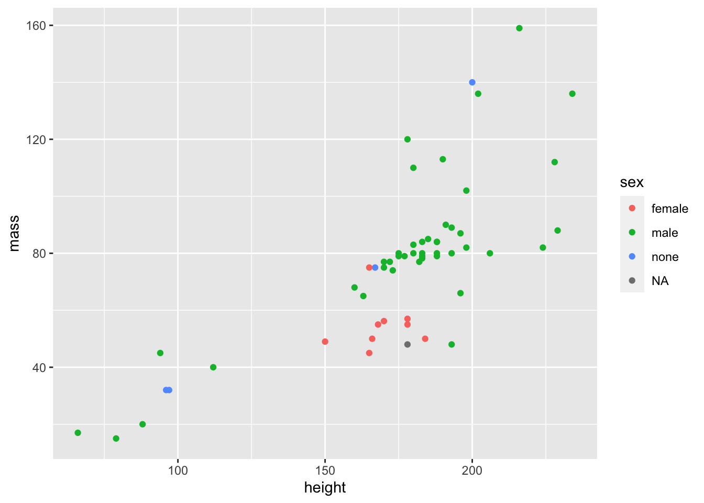
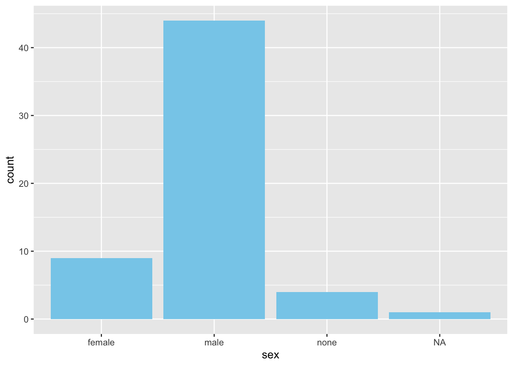
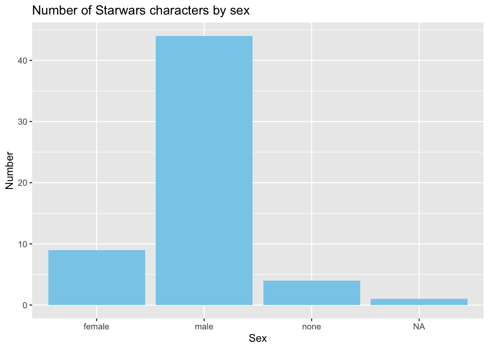
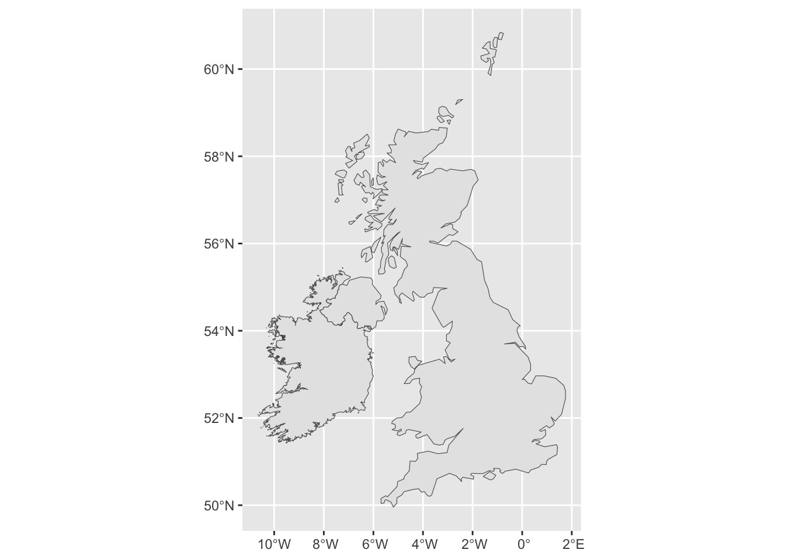
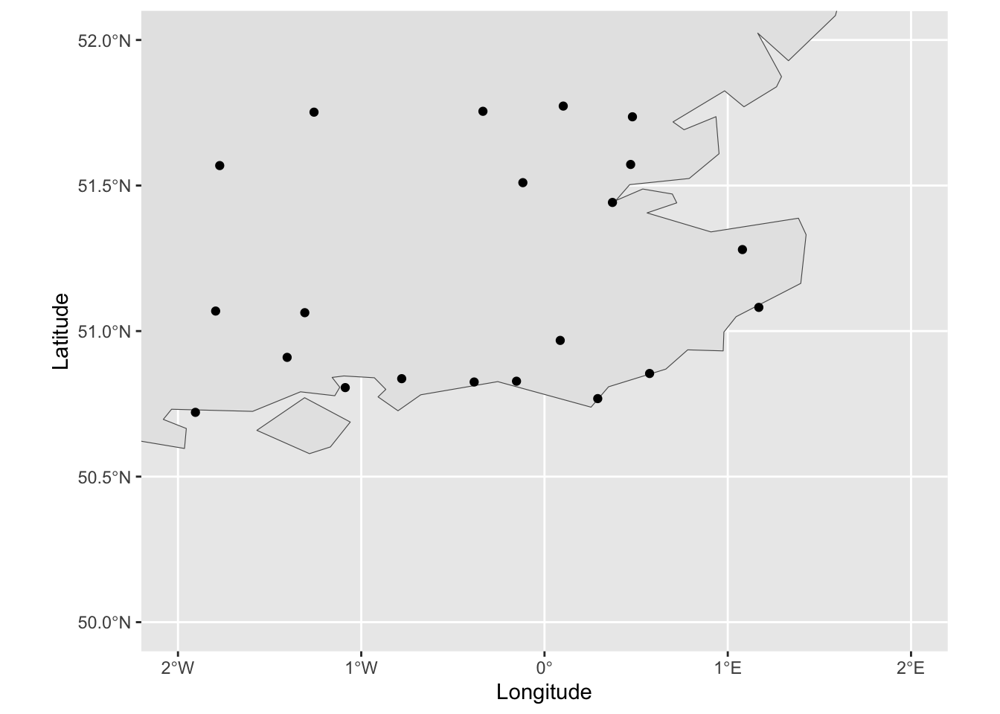

R Programming for Data Science (Peng 2020): - Chapter 5 - Getting Data in and out of R - Chapter 6 - Using the readr package
2.3 Digging deeper into the structure of a data frame
We’re going to use the starwars dataset that is automatically loaded with the package dplyr. To get it you will have to make sure dplyr is loaded (It’s one of the core tidyverse packages).
The first step in most analyses is to explore the data interactively in the console. The most common functions to do this are:
View(df)
head(df)
summary(df)
glimpse(df)
str(df)
You can watch a walk-through of the use of these functions on the starwars data.
Each all the elements of each column of a data frame must be of the same type. In starwars there are elements of type numeric, character and list.
Here is a demonstration of how to extract individual columns from a data frame.
2.4 Reading data from a tabular file
The most common way we’ll be using to get data into R will be to load it from file - usually a CSV or Excel file.
To read a CSV file we will use the read_csv function which is part of the readr package loaded with tidyverse (There is a function read.csv which is part of base R, but readr::read_csv is better.)
There are lots of optional parameters that you can use to refine the performance of read_csv, but it often works fine with just the path to the file.
For example, if we have a file of the 100 most popular girl babies names in England and Wales, in a file called GirlsNames.csv we can import it with the following code.
# A tibble: 10 × 4
City County Latitude Longitude
<chr> <chr> <dbl> <dbl>
1 Truro Cornwall 50.3 -5.05
2 Plymouth UK 50.4 -4.14
3 Exeter the UK 50.7 -3.53
4 Bournemouth UK 50.7 -1.90
5 Eastbourne East Sussex 50.8 0.290
6 Portsmouth Hampshire 50.8 -1.09
7 Worthing West Sussex 50.8 -0.384
8 Brighton & Hove East Sussex 50.8 -0.153
9 Chichester West Sussex 50.8 -0.779
10 Hastings East Sussex 50.9 0.573
2.5 Documentation and help
You should get into the habit of looking at the documentation for each function the first time you use it.
The first place to look is by using the built-in help in RStudio. You can either go to the help window and use the search, or you can type “?” in the console. For example “?read_csv”. (You’ll usually need to have the relevant package loaded to get help, but “??” might produce something useful.). The help information can sometimes be a bit technical and overwhelming, but there are usually helpful examples at the end.
Have a look at the help page for read_csv now.
The official repository for packages is called CRAN. There you will find the package documentation which always has a PDF reference document with details of all the functions in the package. You’ll also often find one or more vignettes which are tutorial-style documents giving an introduction to the package and maybe more detail on particular aspects.
Try a web search for “CRAN dplyr” now and see what you can find.
Now we know how to get data into R it won’t be long before you want to plot it.
There are a number of alternatives but we’ll be using ggplot. The syntax can take a bit of getting used to, so here are a couple of simple examples.
There are three different components to making a plot in ggplot.
a data frame containing the data you want to plot
the type of plot you want
the columns containing the data to be plotted
Here’s the simplest possible example using the starwars data. (here’s a walk-through)
library(ggplot2)plot_data <- starwars %>%filter(mass <1000) # this is explained in the walk-throughggplot(plot_data) +geom_point(aes(x = height, y = mass, color = sex))

Part 1 is dealt with by passing the data frame as a parameter to ggplot.
Part 2 is dealt with by choosing an appropriate geom_ function.
Part 3 is dealt with by the parameters to the aes function. Note that different geoms have different aes requirements. See the built in help for the particular geom.
Here’s another example:
ggplot(plot_data) +geom_bar(aes(x = sex), fill ="skyblue")

For a quick and easy guide to producing many types of plots see the R Graphics Cookbook (Chang 2020).
Question for you
How can you add a title to a chart and change the axis labels?
Use ggtitle(), xlab() and ylab().
ggplot(plot_data) +geom_bar(aes(x = sex), fill ="skyblue") +ggtitle("Number of Starwars characters by sex") +xlab("Sex") +ylab("Number")

2.7 Simple maps with ggplot
There’s no denying that manipulating and visualizing spatial data can be very complex and most of the techniques are far beyond the scope of this course. But it’s such a powerful visualization method that I thought it was important to give you a way to get started by plotting points on a simple map.
If you want to find out more about this topic I recommend Geocomputation with R (Robin Lovelace 2020)
There are many formats for storing spatial data. In this example we use two: shapefiles and the relatively new Simple Features,
Shapefiles are well established, and most publishers of geographical information will make it available in this format (possibly alongside others)
The simple features format allows us to work with geographical data in the familiar form of a data frame, and to plot maps using ggplot. We’ll need to install the sf package before we can get started.
We are going to use low resolution country boundary shapefiles from here. (I’ve already downloaded files for the UK and Ireland and put them in Blackboard.)
The first bit of code reads in two files and converts them to sf objects.
We can see there is only one row and 8 columns. The row contains attributes and geometry information about a single feature - crucially it contains geometry information which, in this case defines a set of polygons which make up the boundary of Ireland.
Since they came from the same source, the UK file contains the same columns, so we can stick them together to create a single object which we can then plot using the sf_geom provided by ggplot2
UK_IRL <-bind_rows(UK, Ireland)m <-ggplot() +geom_sf(data = UK_IRL) # We can plot m now, and add to it later.m

To demonstrate how we can add additional points to this data, we’ll add the cities we listed above to the map. We’ll also change the limits of the plot to zoom in on the South East of the country.
m +geom_point(data = cities, aes(x = Longitude, y = Latitude)) +xlim(c(-2, 2)) +ylim(c(50, 52))

At this scale we can see the low resolution of the boundary information.
2.8 Week 2 Task
The task for Week 2 can be found in the Week 2 folder on Blackboard. This week you should knit your file to PDF and upload the RMD and PDF files.
Wickham, Hadley, and Garrett Grolemund. 2017. R for Data Science: Import, Tidy, Transform, Visualize, and Model Data. O’Reilly Media. http://r4ds.had.co.nz/.